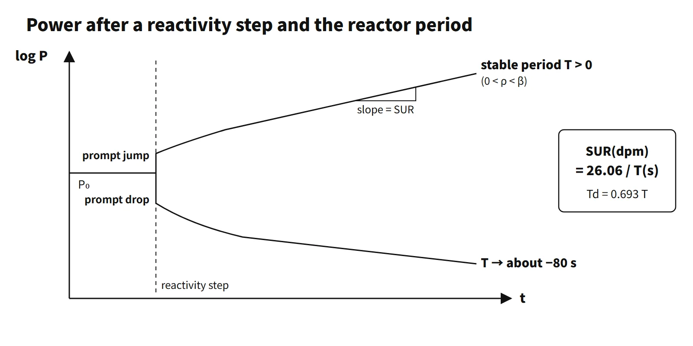

Reactor Physics & Kinetics · C-RX-004
Reactor Period — The Time for Power to Change by a Factor of e, Startup Rate and the Meaning of −80 Seconds
How power moves after a reactivity step: a prompt jump or drop, a transient, then a stable period that operators read as startup rate, with no negative period shorter than about 80 seconds.
The reactor period T is the time it takes for the neutron density (power) to change by a factor of e (about 2.718), defined as T = P/(dP/dt). Power follows P(t) = P₀·et/T: a positive period means rising power, a negative period falling power, and T = ∞ a critical reactor.
A first line for an exam answer: "the time for power to change by a factor of e; after the transient following a step reactivity insertion has died out, the stable period is linked to reactivity through the inhour equation" — this gives both the definition and the basis for calculation.
Principle and mechanism
With prompt neutrons only: T = ℓp/(k−1)
In an infinite homogeneous reactor, ignoring delayed neutrons, the neutron population grows by (k−1)n in one generation (prompt neutron lifetime ℓp). Since dn/dt = (k−1)n/ℓp, n(t) = n₀·e(k−1)t/ℓp, i.e. T = ℓp/(k−1). The 73rd exam (2004), session 2, Q2 asked exactly for this derivation. With the light-water value ℓp ≈ 2×10⁻⁵ s and k−1 = 0.002, T ≈ 0.01 s, so power would grow by e¹⁰⁰ in one second. Delayed neutrons are the reason real reactors do not behave like this.
Adding delayed neutrons: the inhour equation and the one-group approximation
Substituting n ∝ eωt into the point kinetics equations with delayed neutrons gives the inhour equation ρ = ωΛ + Σβᵢω/(ω+λᵢ) (ω = 1/T). It has seven roots; for positive reactivity only one positive root (ω₁) survives, while the other six are negative and die away with time.
Calculation questions usually use the one-group approximation.
- One-group inhour equation: ρ = ℓp/T + β/(1+λT)
- Neglecting Λ, for 0 < ρ < β: T ≈ (β−ρ)/(λρ)
- For ρ > β (prompt supercritical): T ≈ Λ/(ρ−β) (milliseconds)
With the conditions of the 2021 exam, session 3, Q6 (ρ = 0.002, β = 0.0065, λ = 0.08 s⁻¹, ℓp = 2×10⁻⁵ s), the period with delayed neutrons is T ≈ 0.0045/(0.08×0.002) = 28.1 s, and without them T = 2×10⁻⁵/0.002 = 0.010 s. At the same reactivity the period is about 2,800 times longer.
The stable period that follows the prompt jump
After a step reactivity insertion, power first jumps on prompt neutrons alone, within a few tens of milliseconds, by a factor of about β/(β−ρ); it then goes through a transient while the precursor concentrations catch up, and finally rises with a constant slope. The period is defined during the transient too, as the instantaneous value P/(dP/dt), but it changes with time. The period of the single exponential term that remains after the transient terms have died out is the stable period, and it is what the instruments show as a steady value. The figure below is a direct integration of the six-group point kinetics equations (initially critical, precursors in equilibrium, no feedback). At ρ = +0.001 power jumps promptly by about 1.18 times and from about 60 s onward becomes a straight line with T ≈ 55 s.
The negative direction is different. When ρ = −0.05 (about −7.7$) is inserted, power drops promptly to about 0.115 times, and then the instantaneous period lengthens over hundreds of seconds, −29 s → −51 s → −77 s, approaching a stable period of about −80 s. Short-lived precursors decay away quickly, and the mean life of the last surviving group-1 precursor (Br-87, λ₁ = 0.0124 s⁻¹), 1/λ₁ ≈ 80 s, limits how fast the power can fall. Inserting even more negative reactivity only increases the prompt drop; the stable period does not become shorter than 80 s in magnitude (in the inhour equation the negative stable root lies closer to 0 than −λ₁). The 2023 exam, session 3, Q6 (ω = 1/80 s⁻¹) uses this property.
![Semi-log plot of relative power from 1e-4 to 1e3 over 300 seconds after reactivity steps, computed with six-group point kinetics: for rho = +0.001 (0.15 dollars) power jumps by about 1.18 times and then rises along a straight line with a stable period of about 55 s and a startup rate of 0.48 decades per minute; for rho = -0.05 (about -7.7 dollars) power drops to about 0.115 times and the local period lengthens from -29 s to -51 s to -77 s, approaching about -80 s (-0.33 dpm); an inset zooms the first 2 seconds, and side cards give SUR = 26.06/T and a table: 26 s = 1.0 dpm (doubling 18 s), 55 s = 0.48 dpm (doubling 38 s), -80 s = -0.33 dpm (halving 55 s)](../../assets/images/concepts/c-rx-004-reactor-period/fig1-power-history-sur.webp)
Period and startup rate
The startup rate SUR expresses how many decades (factors of 10) the power changes per minute, in dpm (decades per minute). Setting P = P₀·10SUR·t (t in minutes) equal to P = P₀·et/T (t in seconds) gives SUR·ln10 = 60/T, so
SUR (dpm) = 60/(T·ln10) = 26.06/T(s)
1 dpm corresponds to T = 26 s, and −80 s to −0.33 dpm. The doubling time, the time for power to double, is Td = T·ln2 = 0.693T. On a log-power recorder the slope of the straight line is the startup rate itself, so operators read the startup rate directly rather than the period.
What it means in a plant
- Startup (after reaching criticality): once criticality is passed, control rods are withdrawn to add a small positive reactivity and raise power decade by decade. The startup rate is kept within the range set by procedures. At low power there is almost no temperature feedback, so the period is set by the inserted reactivity alone, and the rate of reactivity addition is the most sensitive variable.
- Temperature feedback lengthens the period: once power rises past the point of adding heat, fuel temperature (Doppler) and moderator temperature (negative MTC) feedback cut the reactivity, the period lengthens, and it finally goes to T = ∞ (a new equilibrium). This is the answer to the 2012 exam, session 3, Q6, "how does the startup rate change as power increases".
- Power decrease after shutdown: right after a reactor trip, power drops promptly to a few percent and then falls with a period of about −80 s (−1/3 dpm). For a 10 % reactivity shutdown, power starts at about 6.7 % after the prompt drop and takes about 15 minutes to fall to the 10⁻⁶ level. Checking that the startup-rate meter settles at about −1/3 dpm right after shutdown is one indicator that the shutdown has succeeded. Decay heat is a separate component.
- Protection system viewpoint: an uncontrolled rod withdrawal from subcritical or low-power startup conditions (SRP 15.4.1) is an event in which power surges with a short period. Neutron flux trips in the low-power range (such as the high logarithmic power trip in South Korean CE-type designs) terminate this surge.
Regulatory basis
- 10 CFR 50 Appendix A: GDC 20 (protection system functions), GDC 25 (SAFDL protection for a single malfunction of the reactivity control system), GDC 28 (reactivity limits).
- NUREG-0800 SRP 15.4.1: uncontrolled control rod assembly withdrawal from a subcritical or low-power startup condition. It reviews the reactivity insertion rate, the power excursion, the trip timing and fuel acceptance criteria.
- Operator examination standard: the US NRC Generic Fundamentals Examination equation sheet gives SUR = 26.06/τ and P = P₀·10SUR·t as the standard equations.
- South Korea: Article 26 (reactor protection system) and Article 28 (reactivity control systems) of the Korean technical standard rule (Rules on Technical Standards for Nuclear Reactor Facilities, etc.), each plant's technical specifications (operating requirements for ex-core neutron instrumentation during startup) and KINS Safety Review Guideline 15.4.1 follow the same structure.
- IAEA: SSR-2/1 (Rev. 1, 2016) and SSG-52 (2019) cover reactivity control and protection system design requirements.
- Changes since the questions were set: the physics and equations of the period are unchanged. Only the fuel acceptance criteria for reactivity accidents changed, with RG 1.77 (1974) replaced by RG 1.236 (2020).
Easily confused pairs
| Reactor period T | Startup rate SUR | Doubling time Td | |
|---|---|---|---|
| Definition | Time for power to change by a factor of e | Decades of power change per minute | Time for power to double |
| Unit | s | dpm | s |
| Relation | Reference | 26.06/T | 0.693T |
| At 1 dpm | 26 s | 1 | 18 s |
| Prompt period | Stable period (with delayed neutrons) | |
|---|---|---|
| Expression | ℓp/(k−1); Λ/(ρ−β) if ρ > β | Positive root of the inhour equation; one group (β−ρ)/(λρ) |
| Example ρ = 0.002 | 0.010 s | 28 s (one group) |
| When it applies | Tens of ms right after insertion | After the transient has died out (tens of seconds later) |
| Negative reactivity | Prompt drop | Converges over a long time to a stable period of about −80 s (1/λ₁) |
Key points at a glance
Model 10-point answer: definition and characteristics of the reactor period
- Definition: time for the neutron density (power) to change by a factor of e; T = P/(dP/dt), P = P₀et/T.
- Sign: T > 0 rising power, T < 0 falling, T = ∞ critical.
- Prompt only: T = ℓp/(k−1) ≈ 0.01 s (ℓp 2×10⁻⁵ s, ρ 0.002) → uncontrollable.
- With delayed neutrons: positive root of the inhour equation ρ = ωΛ + Σβᵢω/(ω+λᵢ); one group T ≈ (β−ρ)/(λρ) ≈ 28 s.
- Stable period: step insertion → prompt jump β/(β−ρ) → transient → single exponential (stable period).
- Prompt supercritical: for ρ > β, T ≈ Λ/(ρ−β), milliseconds.
- Limit on negative periods: even for large negative ρ, about −80 s (group-1 precursor 1/λ₁).
- Startup rate: SUR (dpm) = 26.06/T; doubling time 0.693T.
- Operation: startup rate kept within the procedure range during startup; temperature feedback lengthens the period as power rises.
- Safety: an uncontrolled rod withdrawal (SRP 15.4.1) produces a short period → protected by low-power-range trips.

This is a model answer, not an official solution. It reflects the criteria current as of 2026.
Exam relevance
The reactor period has appeared nine times in the Korean Professional Engineer (Nuclear Power) exam: 67th exam (2002), session 1, Q11 (the inhour equation) and session 2, Q2 (flux increase after 10 s for ρ = 0.005 and βeff = 0.007); 73rd exam (2004), session 2, Q2 (deriving T = ℓp/(k∞−1) with prompt neutrons only); 2008 exam, session 4, Q5 (period, reactivity and keff for four segments of a power history); 2017 exam, session 1, Q2 (the inhour equation and the physical meaning of its terms); 2019 exam, session 4, Q1 (definitions, relation and calculation of period and startup rate); 2021 exam, session 3, Q6 (period for a 0.002 insertion with and without delayed neutrons); 2023 exam, session 3, Q6 (period and power after a 10 % shutdown insertion); and 2023 exam, session 4, Q6 (moderator temperature coefficient, one-group stable period and keff). Most questions are calculations: one-group stable periods, prompt-only periods, SUR conversions (26.06/T) and reading periods off a power history as T = Δt/ln(P₂/P₁). Remember that the period is the e-folding time, not the doubling time, that the stable period is read only after the prompt jump and transient, and that (β−ρ)/(λρ) is not valid for ρ ≥ β.